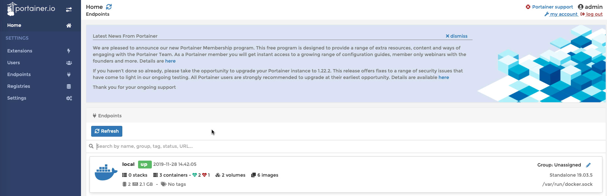
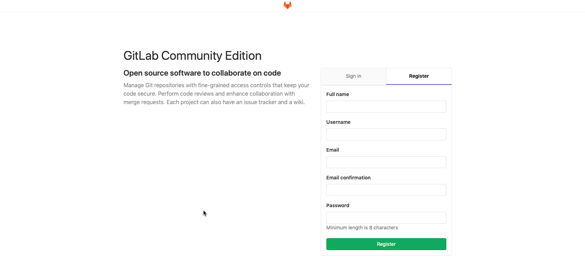

本文主要记录Mac上的Gitlab安装过程，使用Docker来安装Gitlab。
安装Docker
官网下载安装即可，不赘述。
安装portainer
这是一个可视化管理docker的工具，1
docker run -d -v "/var/run/docker.sock:/var/run/docker.sock" -p 9060:9060 portainer/portainer
安装完毕后，访问http://localhost:9060，需要设定管理员密码，设置完成后，进入系统。
进入系统后，选择管理Local的Docker环境。

安装Gitlab
1 | sudo docker run -d \ |
做了端口映射，并且做了数据卷，将Gitlab的目录挂载到本机指定目录下。
